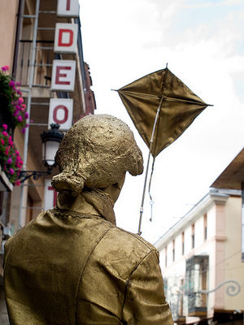
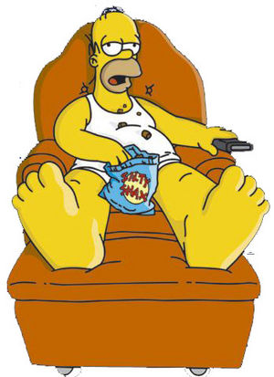
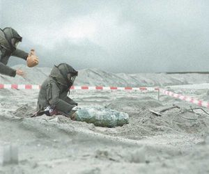
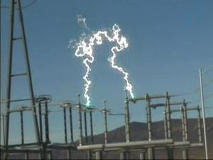
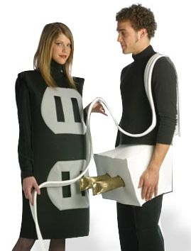
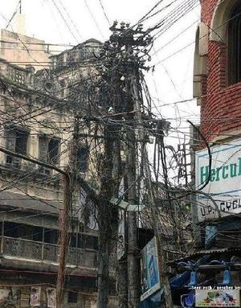

Cable
 De: La Frikipedia, la enciclopedia extremadamente seria.
De: La Frikipedia, la enciclopedia extremadamente seria.
De la serie botánica para todos:
| Nombre común:
|
Cable
|
| Nombre científico:
|
Electrus Conductus
|
| Especie:
|
Cobrianos
|
| Subespecie:
|
Alargadores
|
| Clima:
|
Electrico
|
| Zonas en las que se da:
|
Suele darse abundantemente en casas de nerds, frikis y tipos asi.
|
| ¿Es comestible?:
|
Solo para wombats
|
| ¿Es fumable?:
|
solo si se combina con pegamento
|
| Morfología (para el que sepa que es esto):
|
Cosa alargada, paliducha y fofa (no confundir con pene)
|
| Finalidad de su existencia:
|
Hacernos caer
|
«Mejor le seguimos el cable...»
~ Eva Brown hablando de su novio...
«¡¡Sujeta bien el cable!!.»
~ IP anónima antes de morir aplastado por un piano
«¿El verde o el rojo?»
~ Daltonico intentando desactivar una bomba
«¡Rapido, necesito una funda de cable!»
~ Robocop antes de hacer sexo
Dicese de aquella sustancia de la que están hechos tanto los Carcelero Jhonny), como tambien de salvar el mundo de las garras del Pato Donald. Construido a partir del SPAM y los SPOILERS, es el arma definitiva.
Historia
 Ven Jamin Frank Link y su cometa.
Hace ya un tiempo en el que los suerte vino cuando este chiquitistan decidio crear un objeto para poder encerrar esa brujeria que hoy llamamos cable.
Usos

Yamcha ya conoce todos los usos del cable inventados y por inventar. ¿Y tu?
Antiguamente, el primer cable se usaba para poder hacer un telefonito con dos vasitos de plastico, colgar la ropa y saltar a la comba, pero a medida que avanzaba el tiempo, aparecieron los verdaderos usos de un cable hecho y derecho (o doblado...). Se pueden usar para:
- Hacer las partes internas de un robot
- Entretener a un cani diciendole que lo de dentro es oro
- Hacer caer a la gente poniendolos en lugares insospechados
- Hacer espagueti
- Dar de comer a las ratas
- Conducir la electricidad, el ADSL, archivos, fotos comprometedoras de IP anónima por internet...
- Y caerte
- Creando el dobleuso...
- Hacerte un lio
- y volverte a caer
- y reirnos de ti XD
- Subir pianos a los pisos mas altos con consecuencias ridiculas y/o mortales.
- Hacerte la vida imposible
- pasatiempo a modo de desenrrollar, organizar y colocar cada uno de ellos
- para que al dia siguiente esten aun mas enrrollados
- hacer el ahorcado real
- sacar a pasear al perro electrico
- dar celos a spiderman
- dar latigazos en las nalgas
- y que se te pongan rojas
Aparte hay muchos otros usos, como atraer a las mujeres, pero quedara para otra entrega... Aunque si se te ocurre alguna, no dudes en colgarla!
Desambiguacion

Una buena amiga echandome un cable...
El cable tampoco tiene que ser un cable en si, sino también puede usarse para crear frases o usarlas en coletillas o sandwiches.
Ejemplos mas comunes de muletillas:
- Echame un cable
- Siguele el cable (o la "corriente" en idioma HOYGAN)
- ¿Lo pillas? (refiriéndose a un cable)
- Cógeme (también refiriendose a un cable)
Normalmente se usan para dar a entender que no tienes huevos a dar tu opinion y/o sugerencia y prefieres ser un marginadillo social.
Otros tipos de cables
 Claro ejemplo de ablandamiento de cerebro y gordura debido a la tele por "cable"
Aparte de el cable clasico, largo, alargado, grueso, fino, corto, de colorines, pelado, protegido...
exsite una variante llamada "Tele por Cable", creada por penedector para comenzar la inseminacion en masa, pero lo que logro fue crear el vicio mas estafado del mundo. En la actualidad, la tele por cable es de pago (para nerds, tontos, ricos, etc..) o gratis (listillos, ladrones, Homer Simpson...) en cuyo caso seria pirata. Su uso es basico:
- Ver futbol
- Ver pr0n
- Ver series americanas
- Ver pr0n
- Ver peleas de gallos mejicanas profesionales
- Ver pr0n
- Hacerte engordar
- Ver aun mas pr0n
- Hacer de tu brazo derecho inexplicablemente mas fuerte que el izquierdo (zurdos al reves)
- Ver todavia mas pr0n
- Ver peliculas de estreno (la mayoria malas)
Pero su verdadero uso es para lo que fue creado, ya que despues de tantas horas viendo futbol, pr0n y demas, tu cerebro se ablanda y es mas facil para ti que el penedector te encuentre y te insemine...
Cable bomba
 Profesional cortando un cable de bomba y su amigo hijodeputa...
Este tipo de cable ha sido el verdadero protagonista de muchas peliculas (Arma Letal por ejemplo) en el cual desempeña la funcion vital: La vida o muerte del prota de la peli. Normalmente son dos cables de distinto conlor, con pinta inofensiva, hechos normalmente de:
- Un tentaculo de Dios
- Un poco de la Sustancia X
- Ceras de colores (para el color del cable)
- Un poco de marihuana
- Cristal oscuro
- Maldad pura sacada de un wombat
Despues de todo esto, lo demas es ponerle un reloj digital de alarma, una cajita de carton, 2 kg de nitroglicerina, cuatro bombones y un pajarito de cuco acompañado de la nota "XDDDD" y ya tendremos la bomba!!
Un dato importante: 1 de cada 2 cables muere al ser desactivada la bomba (o al no serlo, en cuyo caso mueren los 2)
Propiedades ocultas del cable bomba

Yamcha despues de comer un cable bomba.
Comer cables tambien provoca gases...
Aparte del uso clasico propiamente dicho del cable bomba, existe una variante muy chula que consiste en que en vez de usarlo para montar una bomba, te lo comas, ya que al hacerlo obtienes los poderes de los ingredientes de dicho cable y te pueden ocurrir varios tipos de reacciones, principales, secundarias o vericuetos... Estas son algunas de las mas conocidas:
- Volverse enormemente grande (como Mario Bros con las setas esas tan curiosas...)
- Desarrollar la capacidad de volar la mitad que los pajaros (ellos hacia arriba y hacia abajo, pero tu solo hacia abajo)
- Alucinar en colores
- Ser capaz de saber si una mujer es realmente una muejer
- Desarrollar capacidades de combate kung-fú flipantes
- Poder respirar en el agua con una bombona de gas butano
- Tener mas de 100 orgasmos seguidos
- Ser mas fuerte que Goku y sasuke juntos
- Convertirte en la rana Gustavo
- Volverte marica
- Volverte cani
Y otra muchas mas que pondria pero no quiero convertir el artículo en una torpe lista.
Cable de alta tension
 Reproduccion de un cable de alta tension. Se pueden apreciar claramente los organos reproductivos.
Cable que es capaz de aguantar una gran tension, desde soportar el peso de un elfante saltando a la comba, hasta la tension que produce ver Pozi. Fallo pateticamente...
Actualmente es usado para llevar un monton de corriente, que segun dicen, da energia a la criocapsula donde esta congelado Walt Disney, da energia a las bombillas de los conciertos de Daft Punk, y es lo que usan los canis para intentar que sus motos vuelen (tambien pateticamente).
Transformaciones
 Fusion exitosa de un cable-man (aunque un poco penoso)

Tipica digievolucion a cable cabron.
 ordenada coneccion de estos a lo mejor reconoces cual de estos te conecta a internet
Un cable no solo vive para ser usado por IP anónima (de quien mas tarde se vengara), sino que ademas tiene la capacidad de evolucionar por pokemonizacion hacia distintos niveles mas altos y superiores. Esto comenzo cuando Leticia Sabater, en un intento de ser superior, decidio fusionarse con un cable de tostadora, pero desgraciadamente fallo y lo que consiguio fue que se hizo mas idiota todavia le dio poderes al cable para sobrevivir (porque despues de estar casi fusionado con ese ser, ya eres inmune a todo vamos), y asi fue como los cables pudieron dominar el mundo digievolucionar.
Actualmente, sus transformaciones son:
- Cable cabrón: Este cable es la digievolucion entre un cable y la cope. Es un cable que puede ser tu peor pesadilla, por ejemplo, haciendote tropezar, enredandose escandalosamente o directamente joderte. Su mayor logro ha sido ser los suficientemente largo para provocar tropiezos pero nunca lo suficiente como para llegar al enchufe...
- Cable-man: Este cable es la fusion de un cable y un nerd, aunque no es del todo una fusion sino una union simbiotica, ya que el nerd no puede vivir sin algo que le recuerde a su PC y el cable no puede vivir sin un ser artificial y sin vida (social claro).
- Supercable: Este cable es el resultado de la pokemonización defectuosa de Nacho Vidal, en la que solo sobrevive la parte mas valiosa (ya saben cual -.o!) Es ese tipo de cable ENOOOOOOOOOOORME que tiene pinta de anaconda saliendo de un perchero con un cubata de mas. Estos cables se usan basicamente para para hacer cosas como estas [1]
- Cable magico: Este cable es la transformacion con mas exito despues del cable cabrón. Siempre esta jodiendose y desenchufandose mágicamente. Nadie sabe por que, pero este tipo de cables suelen desenchufarse del PC cuando estas haciendo tu presentacion de Power Point, o cuando estas viendo pr0n y llegas a la parte culminante, dejandote a media asta (XD) o tambien rajandose de vez en cuando provocando ciertos sonidos extraños parecidos a los de un gato metido en un barril lleno de clavos con un perro y una rata...
- Peladilla: Es el típico cable pelao de toda la vida, en el es basicamente un cable fusionado con un nudista y un bacalilla. El cable, al perder todo sentido de la vergüenza, se deshace de su funda de plastico cromado y deja al aire su parte mas "electrizante". Este cable esta acusado de ser un asesino en serie de hamsters, ratones de laboratorio, ardillas y canis (que al ver algo brillante, lo confunden con oro y se tiran a por el como buitres!!!). No se recomienda tocarlo con
la p*lla la mano.
- El cable Invisible (O.o?): Es el cable que solo aparece en ciertas ocasiones especiales. Es la fusion entre un cable bomba y solid snake. Este cable tiene la funcion de confundir y joder, puesto que normalmente solo lo ves cuando, por ejemplo, vas hacia tu habitacion y sin darte cuenta tropiezas y caes de morros, soltando la tipica frase de "ME CAGO EN LA P*TA!!", miras atras y lo ves tendido en el suelo, inofensivo, pero cuando te levantas y miras otra vez ha desaparecido, y ya da igual que te lo pases buscando tirado a cuatro patas y con una lupa y un scaner que no lo vas a volver a ver. Su habitat natural es la oficina.
¿Sabias que...
- ...Siempre es lo suficientemente corto como para no llegar al enchufe, pero lo suficientemente largo como para resultar molesto y producir tropiezos y contusiones varias?
- ...Cuanto más largo es y mejor protegido está, mayor es la posibilidad de que se rompa por dentro?
- ...Un cable se enreda instantáneamente al entrar en contacto con otro cable?
- ...Es el manjar favorito de ratones, hámsters y otras mascotas pequeñas y propensas a escaparse de su jaula?
- ...Desprende calor, es radiactivo, produce cáncer, contamina la atmósfera y mata ballenas?
- ...Es tóxico tras su ingestión, un grave problema puesto que suele confundirse con regaliz?
- ...Si lo abres, tiene muchos hilillos y colorines que no sirven para nada?
- ...Han protagonizado numerosas películas, normalmente el cable verde es el bueno y el cable rojo el malo, por eso cuando muere el bomba?
- ...A veces se intentan atajar los problemas de los cables sustituyéndolos por ondas y wifis varios, pero resulta que éstos son más cancerígenos y malignos aún?
- ...si acoplas dos se reproducen como en la imagen?
- ...<-- el cuadro azul que se ve por allá es un asterisco en realidad?
Enlaces externos
Autor(es):
- Er Makina
- Cortocircuito
- Doctor grijander
- Frikiman
- Roms
- Azulejos
- ElInventor
- Frikih
- Megasoft
- DragóN
Frikipedia 2005-2016, Licencia
GFDL 1.2 - Extraído por FrikiLeaks
![[1]](http://www.frikipedia.es/friki/Archivo:Cables_red_2.jpg){kind=link}